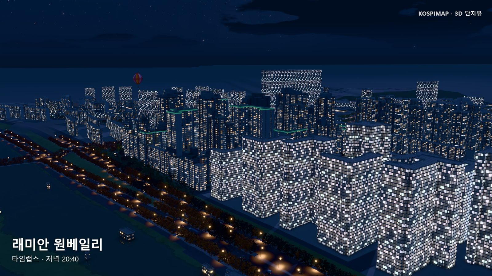
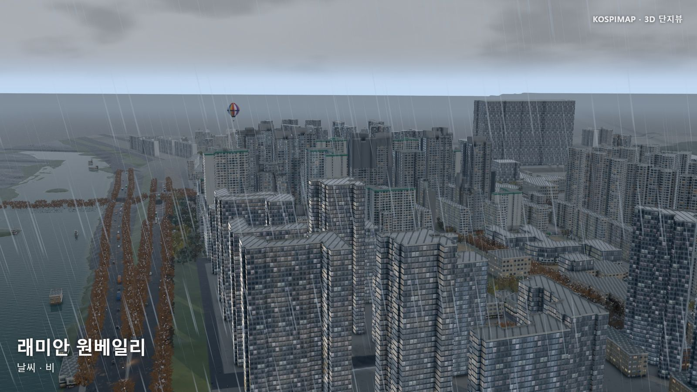
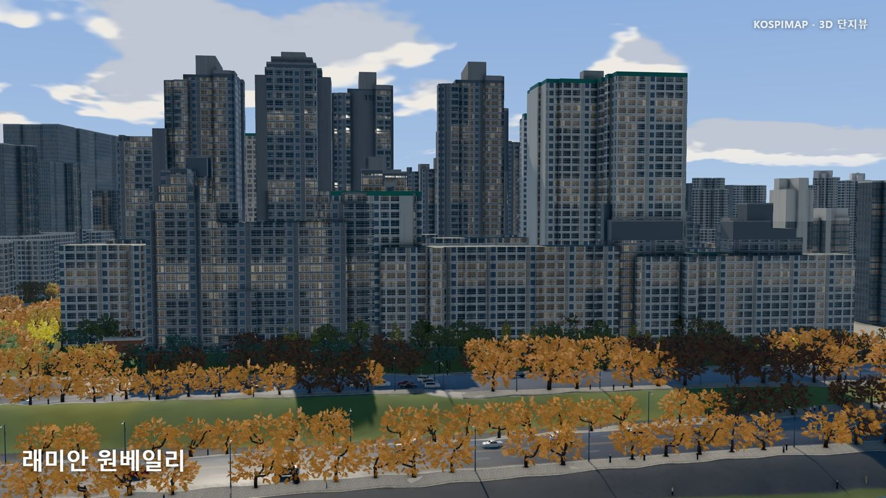

HELLO, HUMAN! CASE STUDY 03
낚시 게임의 엔진이
아파트 지도가 되기까지
KOSPIMAP 3D 단지뷰로 살펴보는
오픈소스 재사용, 데이터 검증, AI 협업의 실제

낚시 게임에서 물과 빛을 그리던 기술로 아파트 단지를 만든다면 어떤 모습일까요?
첫 번째 사례연구의 Tidewater는 브라우저에서 즐기는 낚시 게임이었습니다. 이번에는 그 게임의 렌더링 엔진이 공공데이터로 아파트와 주변 동네를 그리는 KOSPIMAP의 3D 단지뷰에 등장합니다.
건물 아래에 지형이 놓이고, 도로에는 차가 다니고, 해가 지면 창에 불이 들어옵니다. 그런데 화면 뒤의 기록에는 뜻밖의 장면도 있습니다. 창문이 사라진 아파트, 1층인데 높이가 404m인 건물, GPU 부담을 줄였더니 더 끊기는 화면입니다.
이 글은 그 문제를 따라갑니다. 다른 프로젝트의 기술을 어떻게 가져왔고, 잘못된 입력을 어떻게 걸러냈으며, 좋아 보였던 개선을 왜 되돌렸을까요?
건물을 하나씩 만드는 대신, 데이터를 장면으로 바꾸다
3D 아파트라고 하면 먼저 건물 모델을 하나씩 만드는 작업을 떠올리기 쉽습니다. 이 프로젝트는 단지의 위치를 찾고, 건물의 평면 윤곽을 높이만큼 세우며, 지형과 도로 정보를 조합합니다. 브이월드 3D 건물의 형상을 등록 건물과 대응시켜 교체하는 처리도 있습니다.
즉, 특정 단지의 완성된 모형을 보여주는 것보다 입력을 받아 장면을 구성하는 생성 과정에 가깝습니다. 같은 과정으로 여러 단지를 그릴 수 있지만, 원자료의 오류도 함께 화면에 나타납니다.
개발일지의 1층·404m 건물 사례가 그 예입니다. 기록된 높이가 층수와 맞지 않아 층수 기준 높이로 바꿨습니다. 이상한 형상이 보이면 그리기 코드뿐 아니라, 그 형상을 만든 원자료까지 거슬러 올라가야 합니다.
- 01위치와 형상단지 좌표, 건물 윤곽·높이, 지형·도로 조회
- 02검증과 보정3D 형상 대응, 높이 오류와 사진색 판정
- 03동네 구성외벽·지면 재질, 나무·사람·차량 배치
- 04화면에 그리기시간·날씨·조명을 반영해 렌더링
높이 데이터가 없을 때도 구분이 필요합니다. 공개 코드에는 층수가 있으면 층수로 높이를 계산하고, 둘 다 부족하면 추정값을 사용하는 경로가 있습니다. 이때 height_source에 값의 출처를 남깁니다.
- 원자료
- 등록된 높이가 있는 건물값을 읽어 사용해도 원자료 자체의 오류 가능성은 남는다.
- 계산
- 높이는 없고 층수가 있는 건물층수로 높이를 계산하고
floors로 표시한다. - 추정
- 높이와 층수가 모두 부족한 건물대체 규칙을 적용하고
estimated로 표시한다.
공개 코드의 높이 보정 흐름을 단순화한 도식. 실제 서비스 화면에 이 구분이 모두 표시된다는 뜻은 아니다.
자동 생성의 범위를 넓힐수록, 결과를 만든 데이터와 보정 과정도 설명할 수 있어야 합니다. 화면이 정교해졌다고 입력 데이터까지 정확해지는 것은 아니기 때문입니다.
확인 자료 · 개발일지, 데이터에서 시작하다 ↗ · 높이 계산·추정과 출처 기록 코드 ↗
게임에서 필요한 엔진을 가져오다
Tidewater의 낚시나 게임 진행 방식이 아파트 서비스로 옮겨온 것은 아닙니다. 저장소의 고지 문서는 엔진 소스만 포함하고 게임의 제3자 에셋은 포함하지 않았다고 밝힙니다. 가져온 버전과 MIT 라이선스, 파이프라인 캐시·GPU 버퍼 정리·측정 기능 등의 수정 범위도 기록되어 있습니다.
연결 방식도 흥미롭습니다. three.js는 기존 장면의 형상과 카메라 조작, 클릭 판정을 맡습니다. ComplexRenderer라는 어댑터가 이 장면을 Tidewater 기반 WebGPU 렌더러와 이어줍니다.
카메라 조작 · 클릭 판정
장면과 재질을 동기화
조명 · 그림자 · 화면 출력
호환 경로 · WebGPU를 사용할 수 없을 때는 three.js의 WebGL 경로로 화면을 그린다.
엔진 고지 문서와 개발일지를 바탕으로 역할을 단순화했다. 두 경로의 표현 품질이 같다는 뜻은 아니다.
재사용할 기능과 기존 시스템이 계속 맡을 기능을 구분했기에 게임 기술을 다른 도메인에 연결할 수 있었습니다. 커머스에 새로운 검색 엔진이나 AI 서비스를 붙일 때도 상품·주문·회원 시스템 전체를 바꾸기 전에 이런 경계를 먼저 정할 수 있습니다.
재사용의 단위는 역할이 분명한 기능일 수 있습니다. 무엇을 가져오고, 무엇을 유지하고, 둘 사이에 어떤 정보를 주고받을지 정하는 일이 출발점입니다.


이미지 출처 · 제작자가 공개한 개발일지의 낮·밤·날씨 화면 ↗. 2026. 10. 02 확인·저장. 서로 다른 시점의 장면으로 성능 비교 이미지는 아니다.
구현 근거 · 엔진 출처·라이선스·수정 범위 ↗ · 연결 어댑터 ↗
아파트 정면에서 창문이 사라진 이유
사진에서 읽어낸 것은 반복되는 규칙
사진을 외벽에 그대로 붙이면 사진 속 그림자와 장면의 조명이 충돌합니다. 이 프로젝트는 사진의 밝기와 반복 간격을 계산해 창이 있는 면을 판별하고, 반복이 뚜렷할 때 층고·창 간격을 추정합니다. 외벽과 옥상 색을 읽는 처리도 별도로 있습니다.
사진은 장면을 다시 구성하기 위한 속성을 얻는 자료가 됩니다. 이 분석은 공개 코드상 밝기·간격·반복성에 대한 수치 계산으로 구현되어 있습니다. 사진을 처리할 때마다 멀티모달 AI에 판단을 맡기는 구조는 아닙니다.

규칙이 틀렸을 때, 반대 사례까지 확인하다
규칙도 틀립니다. 개발일지에는 정사각형에 가까운 탑상형 아파트의 정면을 창문 없는 측벽으로 잘못 분류한 문제가 나옵니다. 긴 축과 짧은 축을 기준으로 판단하기 어려운 건물에 그 규칙을 적용한 것입니다. 여기에 그늘진 사진의 어두운 색을 외벽색으로 받아들이는 문제가 겹쳤습니다.
수정은 해당 건물에만 예외를 넣는 방식이 아니었습니다. 측벽으로 인정할 폭의 조건을 좁히고, 지나치게 어두운 사진색은 외벽색으로 채택하지 않도록 공통 규칙을 바꿨습니다. 그리고 탑상형 정면의 창이 돌아왔는지 확인한 뒤, 판상형의 실제 측벽은 여전히 창 없이 남는지 살폈습니다.
문제가 된 탑상형 정면
잘못 사라진 창이
다시 나타나야 한다.
반대 사례인 판상형 측벽
원래 없던 창이
새로 생기면 안 된다.
검증 조건을 설명하는 도식. 실제 건물의 비율이나 수정 전후 화면을 재현한 그림은 아니다.
특정 상품의 할인 오류를 고쳤더니 다른 프로모션이 달라지는 일도 같은 구조입니다. 공통 규칙을 수정했다면 문제가 발생한 사례와 그 규칙이 적용되면 안 되는 반대 사례를 함께 확인해야 합니다. 수정된 코드와 함께 남겨야 할 것은 그 수정이 지켜야 할 경계입니다.
확인 자료 · 오류와 반대 사례를 확인한 개발 기록 ↗ · 사진의 밝기·반복성 분석 코드 ↗ · 탑상형 창·외벽색 수정 커밋 ↗
좋아졌는지는 사용자가 겪는 결과로 판단하다
3D 화면에서는 성능 문제가 눈에 보입니다. 회전이 끊기고, 단지를 바꿀 때 멈추고, 이동할수록 메모리 사용량이 커집니다. 작업 기록은 이를 프레임 간격, 메인 스레드 작업, GPU 프로세스, 메모리 사용량으로 나눠 살펴봅니다.
아래는 제작자가 서로 다른 개선 단계에서 보고한 수치입니다. 한 번의 수정으로 모두 달성한 결과는 아닙니다.
프레임률 높을수록 원활
모바일 화면 조건 · CPU 4배 감속 · 렌더링 준비 작업의 중복 제거
GPU 버퍼 사용량 감소
그리지 않는 인스턴스 메시의 버퍼를 미리 만들지 않도록 변경
GPU 텍스처 단지 이동 중 사용량 감소
떠난 단지의 재질을 20초 보관하던 방식에서 즉시 해제로 변경
막대는 항목별 0에서 시작하며 척도가 다르다. 프레임률 끝의 빗금은 보고된 최솟값~최댓값 범위이며 신뢰구간이 아니다. 개발일지의 측정 환경은 Windows·Chrome·RTX 3070, 프로덕션 빌드, 같은 시각에 이전·이후 빌드를 번갈아 2회 이상 비교. CPU 감속 실험은 실제 휴대폰 벤치마크가 아니며 모든 기기의 결과를 대표하지 않는다.
작업을 나누는 것만으로는 부족하다
큰 작업을 잘게 쪼개도 화면을 그리기 전에 작업 조각들이 연달아 실행되면 한 프레임이 길어질 수 있습니다. 공개된 frameSlice 구현은 프레임 시작 이후 사용한 시간을 살피고, 기본 9ms 예산을 기준으로 다음 작업을 언제 이어갈지 조절합니다.
9ms 예산은 무엇을 보장할까?
이 코드는 작업 조각 사이에서 실행을 양보하는 방식입니다. 이미 시작한 개별 작업을 9ms에 강제로 중단하지 않습니다. 프레임마다 최소 한 조각은 진행하고 대기시간에도 상한이 있어, 모든 프레임이 9ms 안에 끝난다는 보장은 아닙니다. “비동기로 바꿨다”와 “화면이 덜 멈춘다”를 구분해야 하는 이유입니다.
GPU는 편해졌지만, 화면은 더 끊겼다
작업 기록에는 캔버스 그리기를 CPU 쪽으로 옮긴 시도가 나옵니다. GPU 프로세스 정체는 줄었지만 메인 스레드의 부담이 커져, 화면 표시 후 끊기는 시간은 오히려 늘었습니다.
메모리도 원인을 구분해야 했습니다. 이 단지 이동 사례에서는 일정 시간이 지나면 사용량이 돌아왔고, 제작자는 누수 대신 재사용을 위해 보관하던 재질이 쌓인 현상으로 분석했습니다. 떠난 단지의 재질만 즉시 정리하도록 바꿔 재사용과 메모리 회수의 목적을 나눴습니다.
개선은 특정 지표 하나를 낮추는 데서 끝나지 않습니다. 원인을 설명하고, 사용자가 겪는 결과까지 나아졌는지 비교해야 합니다.
확인 자료 · 성능 수치와 측정 조건 ↗ · 최적화를 되돌린 이유·재질 보관 분석 ↗ · 프레임 예산 구현 ↗ · 단지 이동 시 재질 정리 커밋 ↗
AI가 참여했다는 흔적보다, 수정의 근거를 보다
공개 커밋에는 Claude를 공동 작성자로 표기한 기록이 있습니다. 앞서 살펴본 탑상형 정면과 외벽색 수정, 단지 이동 시 재질 정리에서도 확인됩니다. 다만 이 표기로 AI가 작성한 코드의 비율이나 실제 작업시간, 사람과 AI의 세부 역할까지 알 수는 없습니다.
공개 자료에서 확인한 것
AI 공동 작성 표기, 오류를 설명한 개발 기록, 규칙 변경, 제작자가 보고한 비교 수치와 반대 사례 확인.
그 자료만으로 알 수 없는 것
AI의 코드 기여율, 대화와 작업의 전체 과정, AI를 쓰지 않았을 때와 비교한 생산성 향상 폭.
따라서 “AI가 알아서 완성한 3D 서비스”라고 소개하기보다는, AI와 만든 변경을 검토할 근거가 남아 있는 사례로 읽는 편이 타당합니다. 어떤 화면이 잘못되었고, 무엇을 바꿨으며, 어떤 결과를 보고 채택하거나 되돌렸는지 따라갈 수 있기 때문입니다.
헬로우 휴먼이 가져갈 질문도 구체적이어야 합니다. AI가 제안한 변경을 받아들일지 결정할 근거가 있는가? 코드가 실행되는지에 더해 다른 입력에서도 유지되는지, 화면이 더 정확해졌는지, 실제로 덜 멈추는지 판단할 기준이 필요합니다.
확인 자료 · 외벽 수정 커밋의 공동 작성 표기 ↗ · 재질 정리 커밋의 공동 작성 표기 ↗
사실적인 화면과 정확한 정보 사이
이 장면을 볼 때 두 가지 경계를 기억할 필요가 있습니다.
데이터에 근거한 형상과 정확도가 보증된 분석 결과는 다릅니다. 등록 높이뿐 아니라 층수 계산과 추정값을 사용하는 경로가 있고, 사진 분석에도 밝기와 반복성에 따른 판정이 들어갑니다. 실제와 닮았다는 이유만으로 모든 위치·치수·외벽 표현이 검증되었다고 볼 수는 없습니다.
호환 경로가 있어도 표현과 품질은 따로 확인해야 합니다. three.js 기반 WebGL과 Tidewater 기반 WebGPU에서 핵심 정보와 조작이 어떻게 유지되는지, 여러 기기에서 어떤 품질을 보장할지는 별도의 검증 항목입니다.
개발일지는 일조·조망 분석과 실제 교통량·날씨 반영 등을 앞으로의 가능성으로 소개합니다. 이를 이미 제공되는 검증된 분석 기능으로 읽어서는 안 됩니다. 특히 장면에 움직이는 차량과 비가 보인다고 해서 실제 교통과 실시간 기상을 재현한다는 뜻은 아닙니다.
제품의 다음 질문은 화면 밖에도 있습니다. 추정값을 사용자에게 어떻게 알릴지, 오래되거나 부족한 데이터는 무엇으로 표시할지, 기능이 제한되는 기기에서는 어떤 정보를 지킬지 정해야 합니다. 사실적으로 보이게 만드는 일과 정확하게 이해하도록 돕는 일은 함께 진행되어야 합니다.
확인 자료 · 개발일지에 제시된 향후 발전 방향 ↗. 위 검증 항목은 이를 바탕으로 한 헬로우 휴먼의 해석이다.
우리 업무에 가져올 검증 방식
이 사례에서 커머스 개발로 옮겨볼 만한 것은 입력을 가공하고, 오류를 분류하고, 변경의 효과를 확인하는 방식입니다. 다음은 실제 성과가 아닌 적용 아이디어입니다.
| KOSPIMAP에서 본 방식 | 커머스에서 해볼 실험 |
|---|---|
| 원자료·계산·추정의 구분 | 협력사 상품정보와 자동 보정값을 구분하고, 보정 이유를 기록한다. |
| 공통 규칙 수정 후 반대 사례 확인 | 쿠폰 적용 상품과 제외 상품, 중복 할인이 금지된 상품을 함께 검증한다. |
| 내부 지표와 사용자 결과를 함께 비교 | AI 응답속도뿐 아니라 검토시간·재작업률·업무 완료시간을 비교한다. |
예를 들어 상품정보 정비를 자동화한다면 작은 검증 세트부터 만들 수 있습니다. 정상 상품, 필수 정보가 빠진 상품, 단위가 섞인 상품, 예외 조건이 있는 상품을 넣고 수정 전후를 비교하는 것입니다.
- 01입력 보관정상·누락·예외 사례를 함께 준비
- 02변경 기록적용한 규칙·모델과 바꾼 이유
- 03같은 조건 비교수정 전후와 반대 사례를 확인
- 04판단 남기기채택·되돌리기와 미확인 항목
이렇게 해야 자동화의 성과도 구체적으로 말할 수 있습니다. “AI가 처리했습니다”에서 멈추지 않고, “이 범위의 입력에서 이 기준을 통과했고, 사람이 다시 확인할 부분은 여기입니다”라고 설명할 수 있습니다.
결과물보다 오래 남는 것은 판단 기준
KOSPIMAP 3D 단지뷰는 게임의 렌더링 엔진을 다른 도메인에 연결한 사례이자, 공개 데이터와 계산 규칙으로 만든 결과를 어떻게 검토할 것인지 보여주는 사례입니다.
필요한 기능을 재사용하고, 입력을 의심하고, 수정 전후를 비교하고, 효과가 없으면 되돌린다.
Workless Engineering이 줄이려는 것은 같은 확인을 매번 처음부터 반복하는 일입니다. 확인의 기준을 남기면 다음 개발자는 그 지점에서 출발할 수 있습니다. 좋은 사례는 멋진 결과물과 함께, 다시 사용할 수 있는 검증 방법을 남깁니다.
직접 살펴볼 자료
- KOSPIMAP 부동산 지도 ↗
- KOSPIMAP 개발일지, 브라우저 안에서 공공 데이터로 아파트 단지를 다시 짓다 ↗
- 제작자가 공개한 두 단지의 시연 영상 ↗ · 장면을 프레임별로 캡처해 이어 붙인 영상이므로 실시간 성능의 근거로 사용하지 않았습니다.
- 확인 당시 공개 소스, 1e62ba8 ↗
- KOSPIMAP이 가져온 Tidewater 엔진의 원본 버전 ↗
- 사례연구 01, AI와 만든 낚시 게임 · 사례연구 02, AI로 만든 웹사이트와 디자인 판단
- 헬로우휴먼 멤버 최태준의 다른 작업물
자료 확인: 2026. 10. 02. 개발 과정과 성능 수치는 제작자 기록이며 별도의 재현 실험 결과가 아닙니다. 이미지는 개발일지의 원본을 사용하고 출처를 표시했습니다. 본문 소스 링크는 확인 당시 커밋에 고정했습니다.
AI 사례연구 목록으로 돌아가기